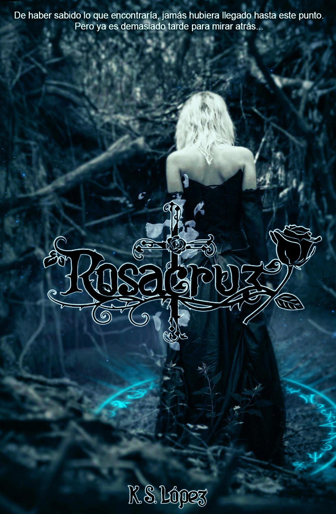

¡Que comience la aventura!
¿Me creerías si te dijera que hay algo tangible que puede darte vida eterna; que puede eliminar la pobreza y abolir las clases sociales; que podrá sanar enfermos y traernos la tan utópica paz mundial?
O que, por el contrario, podría destruirlo todo...
Mi nombre es Evelin Rosenkreuz. Llevo una vida tranquila que raya en el aburrimiento. Al igual que cualquier adolescente de 18 años quiero ir a la universidad, pasar noches en vela de fiesta en fiesta, y amanecer en la habitación de un chico que no he visto en mi vida. Sin embargo, mis planes se verán truncados por una larga cadena de asesinatos y secuestros que me golpeará de cerca. Mis morbosas deducciones van desde vampiros hasta hamburguesas hechas con carne humana. Pero lo que más me devana los sesos es averiguar cuál es la conexión entre la desaparición de mi familia y los recientes acontecimientos.
De lo que si puedo estar segura es de que algo siniestro está gestándose en los rincones más oscuros de la ciudad. Algo que jamás debería salir a la luz. Algo que de ser divulgado atraería el odio y desprecio de las multitudes.
Algo para lo que el mundo aún no está preparado.
Personajes
Sobre la Autora
K. S. López es una escritora y narradora apasionada, nacida y criada en una pequeña ciudad donde los mitos y leyendas locales siempre alimentaron su imaginación. Desde temprana edad, mostró un amor innato por las historias, devorando libros de diversos géneros que iban desde la fantasía épica hasta el thriller psicológico. Su fascinación por el misterio y lo sobrenatural se refleja en su obra debut, Rosacruz, donde combina elementos de suspense con un trasfondo oscuro y cautivador. Licenciada en no hacer nada, ha trabajado en diversas publicaciones, pero fue su incursión en el mundo de la novela lo que le permitió dar rienda suelta a su estilo único. Su escritura es conocida por su habilidad para construir mundos complejos y personajes profundos, abordando temas universales como el amor, el sacrificio y la búsqueda de la verdad. Cuando no está escribiendo, disfruta de explorar la naturaleza y eliminar Counter Terrorists en el C.S. GO. Su objetivo es inspirar a otros a contar sus propias historias y a encontrar la magia que reside en cada palabra. K. S. López reside actualmente en una bulliciosa ciudad, donde continúa desarrollando nuevas historias y explorando los misterios de la vida.